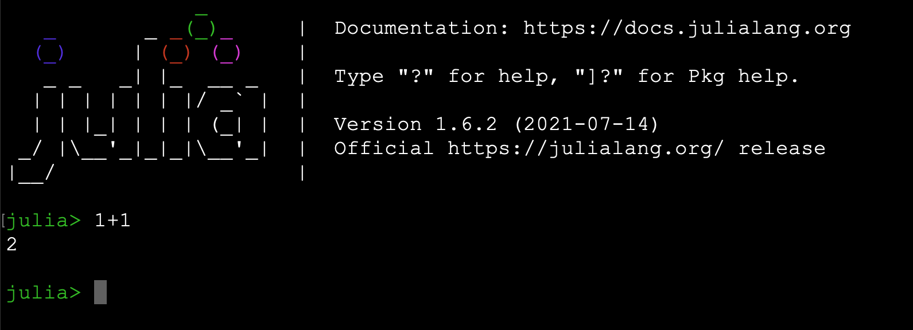

for Pythonistas¶
for Pythonistas¶
Julia looks and feels a lot like MATLAB and Python! Only much, much faster.
It is dynamic, expressive, extensible.
It is particularly designed for Data Science and Machine Learning.
Julia looks and feels a lot like MATLAB and Python! Only much, much faster.
It is dynamic, expressive, extensible.
It is particularly designed for Data Science and Machine Learning.
Julia REPL (read-eval-print loop) allows us to:

To get help on any module, function, variable, or just about anything else, just type ? followed by what you're interested in.
For example, here is the help for the exponent function (?exp).
?exp
search: exp exp2 Expr expm1 exp10 exp_a export exponent expanduser
exp(x)Compute the natural base exponential of x, in other words $e^x$.
jldoctest
julia> exp(1.0)
2.718281828459045exp(A::AbstractMatrix)Compute the matrix exponential of A, defined by
For symmetric or Hermitian A, an eigendecomposition (eigen) is used, otherwise the scaling and squaring algorithm (see 1) is chosen.
jldoctest
julia> A = Matrix(1.0I, 2, 2)
2×2 Matrix{Float64}:
1.0 0.0
0.0 1.0
julia> exp(A)
2×2 Matrix{Float64}:
2.71828 0.0
0.0 2.71828Nicholas J. Higham, "The squaring and scaling method for the matrix exponential revisited", SIAM Journal on Matrix Analysis and Applications, 26(4), 2005, 1179-1193. doi:10.1137/090768539↩
Using ? to switch to help mode works in interactive mode only (in Jupyter and in the Julia REPL).
Here are other ways to get help and inspect objects in interactive mode:
| Julia | Python |
|---|---|
?obj |
help(obj) |
dump(obj) |
print(repr(obj)) |
names(FooModule) |
dir(foo_module) |
methodswith(SomeType) |
dir(SomeType) |
@which func |
func.__module__ |
apropos("bar") |
Search for "bar" in docstrings of all installed packages |
typeof(obj) |
type(obj) |
obj isa SomeTypeor isa(obj, SomeType) |
isinstance(obj, SomeType) |
Let's write our first function.
It will estimate π using the equation:
$π = 4 \times \left(1 - \dfrac{1}{3} + \dfrac{1}{5} - \dfrac{1}{7} + \dfrac{1}{9}-\dfrac{1}{11}+\dots\right)$
function estimate_pi(n)
s = 1.0
for i in 1:n
s += (isodd(i) ? -1 : 1) / (2i + 1)
end
4s # or return 4s
end
p = estimate_pi(100_000_000)
println("π ≈ $p")
println("Error is $(p - π)")
π ≈ 3.141592663589326 Error is 9.999532757376528e-9
Compare this with the equivalent Python 3 code:
# PYTHON
import math
def estimate_pi(n):
s = 1.0
for i in range(1, n + 1):
s += (-1 if i % 2 else 1) / (2 * i + 1)
return 4 * s
p = estimate_pi(100_000_000)
print(f"π ≈ {p}") # f-strings are available in Python 3.6+
print(f"Error is {p - math.pi}")
Similar, but notice the small differences:
| Julia | Python |
|---|---|
function |
def |
for i in X...end |
for i in X:... |
1:n |
range(1, n+1) |
cond ? a : b |
a if cond else b |
2i + 1 |
2 * i + 1 |
4s |
return 4 * s |
println(a, b) |
print(a, b, sep="") |
print(a, b) |
print(a, b, sep="", end="") |
"$p" |
f"{p}" |
"$(p - π)" |
f"{p - math.pi}" |
This example shows that:
end.2i and 4s (but you can write 2 * i and 4 * s if you prefer).return keyword is optional at the end of a function. The result of the last expression is returned (4s in this example).π. However, there are generally plain-ASCII equivalents (e.g., π == pi).import is more general and mode flexible.
import is especilly conviniet when running Julia in parallel (see the Parallelization notebook).
import also make the Julia code more readable.
You will know explictly the called methods from which module are coming.
using makes the code more compact but less readable and explicit.
In Julia, import Foo.Bar: a, b corresponds to running from foo.bar import a, b in Python.
| Julia | Python |
|---|---|
import Foo |
from foo import *; import foo |
import Foo.Bar |
from foo.bar import *; from foo import bar |
import Foo.Bar: a, b |
from foo.bar import a, b |
import Foo: Bar |
from foo import bar |
Julia lets you easily run Python code using the PyCall module. We installed it earlier, so we just need to import it:
import PyCall
Now that we have imported PyCall, we can use the PyCall.pyimport() function to import a Python module directly in Julia.
For example, let's check which Python version we are using:
sys = PyCall.pyimport("sys")
sys.version
"3.8.5 (default, Sep 4 2020, 02:23:17) \n[Clang 10.0.0 ]"
In fact, let's run the Python code we discussed earlier (this will take about 15 seconds to run, because Python is so slow...):
PyCall.py"""
import math
def estimate_pi(n):
s = 1.0
for i in range(1, n + 1):
s += (-1 if i % 2 else 1) / (2 * i + 1)
return 4 * s
p = estimate_pi(100_000_000)
print(f"π ≈ {p}") # f-strings are available in Python 3.6+
print(f"Error is {p - math.pi}")
"""
π ≈ 3.141592663589326 Error is 9.999532757376528e-09
As you can see, running arbitrary Python code is as simple as using py-strings (PyCall.py"...").
Note that py-strings are not part of the Julia language itself: they are defined by the PyCall module (we will see how this works later).
PyCall.py"p"
3.141592663589326
Let's compare this to the value we calculated above using Julia:
PyCall.py"p" - p
0.0
Perfect, they are exactly equal!
As you can see, it's very easy to mix Julia and Python code. So if there's a module you really love in Python, you can keep using it as long as you want! For example, let's use NumPy:
np = PyCall.pyimport("numpy")
a = np.random.rand(2, 3)
2×3 Matrix{Float64}:
0.997556 0.642777 0.134838
0.434044 0.00266033 0.365324
Notice that PyCall automatically converts some Python types to Julia types, including NumPy arrays. That's really quite convenient! Note that Julia supports multi-dimensional arrays (analog to NumPy arrays) out of the box. Array{Float64, 2} means that it's a 2-dimensional array of 64-bit floats.
PyCall also converts Julia arrays to NumPy arrays when needed:
exp_a = np.exp(a)
2×3 Matrix{Float64}:
2.71165 1.90175 1.14435
1.54349 1.00266 1.44098
If you want to use some Julia variable in a py-string, for example exp_a, you can do so by writing $exp_a like this:
PyCall.py"""
import numpy as np
result = np.log($exp_a)
"""
PyCall.py"result"
2×3 Matrix{Float64}:
0.997556 0.642777 0.134838
0.434044 0.00266033 0.365324
If you want to keep using Matplotlib, it's best to use the PyPlot module (which we installed earlier), rather than trying to use PyCall.pyimport("matplotlib"), as PyPlot provides a more straightforward interface with Julia, and it plays nicely with Jupyter:
import PyPlot
x = range(-5π, 5π; length=100)
PyPlot.plt.plot(x, sin.(x) ./ x) # we'll discuss this syntax in the next section
PyPlot.plt.title("sin(x) / x")
PyPlot.plt.grid("True")
![]()
That said, Julia has its own plotting libraries, such as the Plots and Gadfly modules, which are much more powerful convinient than matplotlib.
Julia's range() function acts much like NumPy's linspace() function, when you use the length argument.
However, it acts like Python's range() function when you use the step argument instead (except the upper bound is inclusive).
Julia's range() function returns an object which behaves just like an array, except it doesn't actually use any RAM for its elements, it just stores the range parameters.
If you want to collect all of the elements into an array, use the collect() function (similar to Python's list() function):
println(collect(range(10, 80, step=20)))
println(collect(10:20:80)) # 10:20:80 is equivalent to the previous range
println(collect(range(10, 80, length=5))) # similar to NumPy's linspace()
step = (80-10)/(5-1) # 17.5
println(collect(10:step:80)) # equivalent to the previous range
[10, 30, 50, 70] [10, 30, 50, 70] [10.0, 27.5, 45.0, 62.5, 80.0] [10.0, 27.5, 45.0, 62.5, 80.0]
The equivalent Python code is:
# PYTHON
print(list(range(10, 80+1, 20)))
# there's no short-hand for range() in Python
print(np.linspace(10, 80, 5))
step = (80-10)/(5-1) # 17.5
print([i*step + 10 for i in range(5)])
| Julia | Python |
|---|---|
np = PyPlot.pyimport("numpy") |
import numpy as np |
import PyPlot |
from pylab import * |
1:10 |
range(1, 11) |
1:2:10or range(1, 11, 2) |
range(1, 11, 2) |
1.2:0.5:10.3or range(1.2, 10.3, step=0.5) |
np.arange(1.2, 10.3, 0.5) |
range(1, 10, length=3) |
np.linspace(1, 10, 3) |
collect(1:5)or [i for i in 1:5] |
list(range(1, 6))or [i for i in range(1, 6)] |
Did you notice that we wrote sin.(x) ./ x (not sin(x) / x)?
This is equivalent to [sin(i) / i for i in x].
a = sin.(x) ./ x
b = [sin(i) / i for i in x]
@assert a == b
This is not just syntactic sugar: it's actually a very powerful Julia feature. Indeed, notice that the array only gets traversed once. Even if we chained more than two dotted operations, the array would still only get traversed once. This is called loop fusion.
In contrast, when using NumPy arrays, sin(x) / x first computes a temporary array containing sin(x) and then it computes the final array. Two loops and two arrays instead of one. NumPy is implemented in C, and has been heavily optimized, but if you chain many operations, it still ends up being slower and using more RAM than Julia.
However, all the extra dots can sometimes make the code a bit harder to read. To avoid that, you can write @. before an expression: every operation will be "dotted" automatically, like this:
a = @. sin(x) / x
b = sin.(x) ./ x
@assert a == b
Note: Julia's @assert statement starts with an @ sign, just like @., which means that they are macros. In Julia, macros are very powerful metaprogramming tools: a macro is evaluated at parse time, and it can inspect the expression that follows it and then transform it, or even replace it. In practice, you will often use macros, but you will rarely define your own. I'll come back to macros later.
Let's compare the Julia and Python implementations of the estimate_pi() function:
@time estimate_pi(100_000_000);
0.114690 seconds
To get a more precise benchmark, it's preferable to use the BenchmarkTools module. Just like Python's timeit module, it provides tools to benchmark code by running it multiple times. This provides a better estimate of how long each call takes:
import BenchmarkTools
BenchmarkTools.@benchmark estimate_pi(100_000_000)
BenchmarkTools.Trial: 53 samples with 1 evaluation. Range (min … max): 89.611 ms … 105.873 ms ┊ GC (min … max): 0.00% … 0.00% Time (median): 94.416 ms ┊ GC (median): 0.00% Time (mean ± σ): 94.796 ms ± 4.135 ms ┊ GC (mean ± σ): 0.00% ± 0.00% ▄ █▁ ▁ ▁ ▁ ▄ ▁▁ ▁ ▁▁ ▁▁ ▁ ▁ █▆██▆█▁▆█▁█▆▆▁▆█▁▁▆▁██▆▁▁█▆██▁██▁█▆▁▆▁▁▁▁▁▆▁▁▁▁▁▆▁▆▆▁▁▁▆▁▁▁█ ▁ 89.6 ms Histogram: frequency by time 104 ms < Memory estimate: 0 bytes, allocs estimate: 0.
If this output is too verbose for you, simply use @btime instead:
BenchmarkTools.@btime estimate_pi(100_000_000)
88.932 ms (0 allocations: 0 bytes)
3.141592663589326
Now let's time the Python version. Since the call is so slow, we just run it once (it will take about 15 seconds):
PyCall.py"""
from timeit import timeit
duration = timeit("estimate_pi(100_000_000)", number=1, globals=globals())
"""
PyCall.py"duration"
12.366449234999891
It looks like Julia is close to 100 times faster than Python in this case! To be fair, PyCall does add some overhead, but even if you run this code in a separate Python shell, you will see that Julia crushes (pure) Python when it comes to speed.
So why is Julia so much faster than Python? Well, Julia compiles the code on the fly as it runs it.
Okay, let's summarize what we learned so far: Julia is a dynamic language that looks and feels a lot like Python, you can even execute Python code super easily, and pure Julia code runs much faster than pure Python code, because it is compiled on the fly. I hope this convinces you to read on!
Next, let's continue to see how Python's main constructs can be implemented in Julia.
i = 42 # 64-bit integer
f = 3.14 # 64-bit float
c = 3.4 + 4.5im # 128-bit complex number
bi = BigInt(2)^1000 # arbitrarily long integer
bf = BigFloat(1) / 7 # arbitrary precision
r = 15//6 * 9//20 # rational number
9//8
And the equivalent Python code:
# PYTHON
i = 42
f = 3.14
c = 3.4 + 4.5j
bi = 2**1000 # integers are seemlessly promoted to long integers
from decimal import Decimal
bf = Decimal(1) / 7
from fractions import Fraction
r = Fraction(15, 6) * Fraction(9, 20)
Dividing integers gives floats, like in Python:
5 / 2
2.5
For integer division, use ÷ or div():
5 ÷ 2
2
div(5, 2)
2
The % operator is the remainder, not the modulo like in Python. These differ only for negative numbers:
57 % 10
7
(-57) % 10
-7
| Julia | Python |
|---|---|
3.4 + 4.5im |
3.4 + 4.5j |
BigInt(2)^1000 |
2**1000 |
BigFloat(3.14) |
from decimal import DecimalDecimal(3.14) |
9//8 |
from fractions import FractionFraction(9, 8) |
5/2 == 2.5 |
5/2 == 2.5 |
5÷2 == 2or div(5, 2) |
5//2 == 2 |
57%10 == 7 |
57%10 == 7 |
(-57)%10 == -7 |
(-57)%10 == 3 |
Julia strings use double quotes " or triple quotes """, but not single quotes ':
s = "ångström" # Julia strings are UTF-8 encoded by default
println(s)
ångström
s = "Julia strings
can span
several lines\n\n
and they support the \"usual\" escapes like
\x41, \u5bb6, and \U0001f60a!"
println(s)
Julia strings
can span
several lines
and they support the "usual" escapes like
A, 家, and 😊!
Use repeat() instead of * to repeat a string, and use * instead of + for concatenation:
s = repeat("tick, ", 10) * "BOOM!"
println(s)
tick, tick, tick, tick, tick, tick, tick, tick, tick, tick, BOOM!
The equivalent Python code is:
# PYTHON
s = "tick, " * 10 + "BOOM!"
print(s)
Use join(a, s) instead of s.join(a):
s = join([i for i in 1:4], ", ")
println(s)
1, 2, 3, 4
You can also specify a string for the last join:
s = join([i for i in 1:4], ", ", " and ")
"1, 2, 3 and 4"
split() works as you might expect:
split(" one three four ")
3-element Vector{SubString{String}}:
"one"
"three"
"four"
split("one,,three,four!", ",")
4-element Vector{SubString{String}}:
"one"
""
"three"
"four!"
occursin("sip", "Mississippi")
true
replace("I like coffee", "coffee" => "tea")
"I like tea"
Triple quotes work a bit like in Python, but they also remove indentation and ignore the first line feed:
s = """
1. the first line feed is ignored if it immediately follows \"""
2. triple quotes let you use "quotes" easily
3. indentation is ignored
- up to left-most character
- ignoring the first line (the one with \""")
4. the final line feed it n̲o̲t̲ ignored
"""
println("<start>")
println(s)
println("<end>")
<start>
1. the first line feed is ignored if it immediately follows """
2. triple quotes let you use "quotes" easily
3. indentation is ignored
- up to left-most character
- ignoring the first line (the one with """)
4. the final line feed it n̲o̲t̲ ignored
<end>
String interpolation uses $variable and $(expression):
total = 1 + 2 + 3
s = "1 + 2 + 3 = $total = $(1 + 2 + 3)"
println(s)
1 + 2 + 3 = 6 = 6
This means you must escape the $ sign:
s = "The car costs \$10,000"
println(s)
The car costs $10,000
Raw strings use raw"..." instead of r"...":
s = raw"In a raw string, you only need to escape quotes \", but not
$ or \. There is one exception, however: the backslash \
must be escaped if it's just before quotes like \\\"."
println(s)
In a raw string, you only need to escape quotes ", but not
$ or \. There is one exception, however: the backslash \
must be escaped if it's just before quotes like \".
s = raw"""
Triple quoted raw strings are possible too: $, \, \t, "
- They handle indentation and the first line feed like regular
triple quoted strings.
- You only need to escape triple quotes like \""", and the
backslash before quotes like \\".
"""
println(s)
Triple quoted raw strings are possible too: $, \, \t, "
- They handle indentation and the first line feed like regular
triple quoted strings.
- You only need to escape triple quotes like """, and the
backslash before quotes like \".
Single quotes are used for individual Unicode characters:
a = 'å' # Unicode code point (single quotes)
'å': Unicode U+00E5 (category Ll: Letter, lowercase)
To be more precise:
For example, the character é can be represented either using the single code point \u00E9, or the grapheme cluster e + \u0301:
s = "café"
println(s, " has ", length(s), " code points")
café has 4 code points
s = "cafe\u0301"
println(s, " has ", length(s), " code points")
café has 5 code points
for c in "cafe\u0301"
display(c)
end
'c': ASCII/Unicode U+0063 (category Ll: Letter, lowercase)
'a': ASCII/Unicode U+0061 (category Ll: Letter, lowercase)
'f': ASCII/Unicode U+0066 (category Ll: Letter, lowercase)
'e': ASCII/Unicode U+0065 (category Ll: Letter, lowercase)
'́': Unicode U+0301 (category Mn: Mark, nonspacing)
Julia represents any individual character like 'é' using 32-bits (4 bytes):
sizeof('é')
4
But strings are represented using the UTF-8 encoding. In this encoding, code points 0 to 127 are represented using one byte, but any code point above 127 is represented using 2 to 6 bytes:
sizeof("a")
1
sizeof("é")
2
sizeof("家")
3
sizeof("🏳️🌈") # this is a grapheme with 4 code points of 4 + 3 + 3 + 4 bytes
14
[sizeof(string(c)) for c in "🏳️🌈"]
4-element Vector{Int64}:
4
3
3
4
You can iterate through graphemes instead of code points:
import Unicode
for g in Unicode.graphemes("e\u0301🏳️🌈")
println(g)
end
é 🏳️🌈
Characters in a string are indexed based on the position of their starting byte in the UTF-8 representation. For example, the character ê in the string "être" is located at index 1, but the character 't' is located at index 3, since the UTF-8 encoding of ê is 2 bytes long:
s = "être"
println(s[1])
println(s[3])
println(s[4])
println(s[5])
ê t r e
If you try to get the character at index 2, you get an exception:
try
s[2]
catch ex
ex
end
StringIndexError("être", 2)
By the way, notice the exception-handling syntax (we'll discuss exceptions later):
| Julia | Python |
|---|---|
try...catch ex...end |
try...except Exception as ex...end |
You can get a substring easily, using valid character indices:
s[1:3]
"êt"
You can iterate through a string, and it will return all the code points:
for c in s
println(c)
end
ê t r e
Or you can iterate through the valid character indices:
for i in eachindex(s)
println(i, ": ", s[i])
end
1: ê 3: t 4: r 5: e
Benefits of representing strings as UTF-8:
Drawbacks:
s[5] search for the 5th character from the start of the string, then code like for i in 1:length(s); s[i]; end would be unexpectedly inefficient, since at each iteration there would be a search from the beginning of the string, leading to O(n2) performance instead of O(n).findfirst(isequal('t'), "être")
3
findlast(isequal('p'), "Mississippi")
10
findnext(isequal('i'), "Mississippi", 2)
2
findnext(isequal('i'), "Mississippi", 2 + 1)
5
findprev(isequal('i'), "Mississippi", 5 - 1)
2
Other useful string functions: ncodeunits(str), codeunit(str, i), thisind(str, i), nextind(str, i, n=1), prevind(str, i, n=1).
To create a regular expression in Julia, use the r"..." syntax:
regex = r"c[ao]ff?(?:é|ee)"
r"c[ao]ff?(?:é|ee)"
The expression r"..." is equivalent to Regex("...") except the former is evaluated at parse time, while the latter is evaluated at runtime, so unless you need to construct a Regex dynamically, you should prefer r"...".
occursin(regex, "A bit more coffee?")
true
m = match(regex, "A bit more coffee?")
m.match
"coffee"
m.offset
12
m = match(regex, "A bit more tea?")
isnothing(m) && println("I suggest coffee instead")
I suggest coffee instead
regex = r"(.*)#(.+)"
line = "f(1) # nice comment"
m = match(regex, line)
code, comment = m.captures
println("code: ", repr(code))
println("comment: ", repr(comment))
code: "f(1) " comment: " nice comment"
m[2]
" nice comment"
m.offsets
2-element Vector{Int64}:
1
7
m = match(r"(?<code>.+)#(?<comment>.+)", line)
m[:comment]
" nice comment"
replace("Want more bread?", r"(?<verb>more|some)" => s"a little")
"Want a little bread?"
replace("Want more bread?", r"(?<verb>more|less)" => s"\g<verb> and \g<verb>")
"Want more and more bread?"
if statement¶Julia's if statement works just like in Python, with a few differences:
elseif instead of Python's elif.&& means and, || means or, ! means not, and so on.a = 1
if a == 1
println("One")
elseif a == 2
println("Two")
else
println("Other")
end
One
Julia also has ⊻ for exclusive or (you can type \xor<tab> to get the ⊻ character):
@assert false ⊻ false == false
@assert false ⊻ true == true
@assert true ⊻ false == true
@assert true ⊻ true == false
Oh, and notice that true and false are all lowercase, unlike Python's True and False.
Since && is lazy (like and in Python), cond && f() is a common shorthand for if cond; f(); end. Think of it as "cond then f()":
a = 2
a == 1 && println("One")
a == 2 && println("Two")
Two
Similarly, cond || f() is a common shorthand for if !cond; f(); end. Think of it as "cond else f()":
a = 1
a == 1 || println("Not one")
a == 2 || println("Not two")
Not two
All expressions return a value in Julia, including if statements. For example:
a = 1
result = if a == 1
"one"
else
"two"
end
result
"one"
When an expression cannot return anything, it returns nothing:
a = 1
result = if a == 2
"two"
end
isnothing(result)
true
nothing is the single instance of the type Nothing:
typeof(nothing)
Nothing
for loops¶You can use for loops just like in Python, as we saw earlier. However, it's also possible to create nested loops on a single line:
for a in 1:2, b in 1:3, c in 1:2
println((a, b, c))
end
(1, 1, 1) (1, 1, 2) (1, 2, 1) (1, 2, 2) (1, 3, 1) (1, 3, 2) (2, 1, 1) (2, 1, 2) (2, 2, 1) (2, 2, 2) (2, 3, 1) (2, 3, 2)
The corresponding Python code would look like this:
# PYTHON
from itertools import product
for a, b, c in product(range(1, 3), range(1, 4), range(1, 3)):
print((a, b, c))
The continue and break keywords work just like in Python. Note that in single-line nested loops, break will exit all loops, not just the inner loop:
for a in 1:2, b in 1:3, c in 1:2
println((a, b, c))
(a, b, c) == (2, 1, 1) && break
end
(1, 1, 1) (1, 1, 2) (1, 2, 1) (1, 2, 2) (1, 3, 1) (1, 3, 2) (2, 1, 1)
Julia does not support the equivalent of Python's for/else construct. You need to write something like this:
found = false
for person in ["Joe", "Jane", "Wally", "Jack", "Julia"] # try removing "Wally"
println("Looking at $person")
person == "Wally" && (found = true; break)
end
found || println("I did not find Wally.")
Looking at Joe Looking at Jane Looking at Wally
true
The equivalent Python code looks like this:
# PYTHON
for person in ["Joe", "Jane", "Wally", "Jack", "Julia"]: # try removing "Wally"
print(f"Looking at {person}")
if person == "Wally":
break
else:
print("I did not find Wally.")
| Julia | Python |
|---|---|
if cond1...elseif cond2...else...end |
if cond1:...elif cond2:...else:... |
&& |
and |
|| |
or |
! |
not |
⊻ (type \xor<tab>) |
^ |
true |
True |
false |
False |
cond && f() |
if cond: f() |
cond || f() |
if not cond: f() |
for i in 1:5 ... end |
for i in range(1, 6): ... |
for i in 1:5, j in 1:6 ... end |
from itertools import productfor i, j in product(range(1, 6), range(1, 7)):... |
while cond ... end |
while cond: ... |
continue |
continue |
break |
break |
Now lets looks at data structures, starting with tuples.
Julia has tuples, very much like Python. They can contain anything:
t = (1, "Two", 3, 4, 5)
(1, "Two", 3, 4, 5)
Let's look at one element:
t[1]
1
Hey! Did you see that? Julia is 1-indexed, like Matlab and other math-oriented programming languages, not 0-indexed like Python and most programming languages. I found it easy to get used to, and in fact I quite like it, but your mileage may vary.
Moreover, the indexing bounds are inclusive. In Python, to get the 1st and 2nd elements of a list or tuple, you would write t[0:2] (or just t[:2]), while in Julia you write t[1:2].
t[1:2]
(1, "Two")
Note that end represents the index of the last element in the tuple. So you must write t[end] instead of t[-1]. Similarly, you must write t[end - 1], not t[-2], and so on.
t[end]
5
t[end - 1:end]
(4, 5)
Like in Python, tuples are immutable:
try
t[2] = 2
catch ex
ex
end
MethodError(setindex!, ((1, "Two", 3, 4, 5), 2, 2), 0x00000000000074ee)
The syntax for empty and 1-element tuples is the same as in Python:
empty_tuple = ()
one_element_tuple = (42,)
(42,)
You can unpack a tuple, just like in Python (it's called "destructuring" in Julia):
a, b, c, d, e = (1, "Two", 3, 4, 5)
println("a=$a, b=$b, c=$c, d=$d, e=$e")
a=1, b=Two, c=3, d=4, e=5
It also works with nested tuples, just like in Python:
(a, (b, c), (d, e)) = (1, ("Two", 3), (4, 5))
println("a=$a, b=$b, c=$c, d=$d, e=$e")
a=1, b=Two, c=3, d=4, e=5
However, consider this example:
a, b, c = (1, "Two", 3, 4, 5)
println("a=$a, b=$b, c=$c")
a=1, b=Two, c=3
In Python, this would cause a ValueError: too many values to unpack. In Julia, the extra values in the tuple are just ignored.
If you want to capture the extra values in the variable c, you need to do so explicitly:
t = (1, "Two", 3, 4, 5)
a, b = t[1:2]
c = t[3:end]
println("a=$a, b=$b, c=$c")
a=1, b=Two, c=(3, 4, 5)
Or more concisely:
(a, b), c = t[1:2], t[3:end]
println("a=$a, b=$b, c=$c")
a=1, b=Two, c=(3, 4, 5)
The corresponding Python code is:
# PYTHON
t = (1, "Two", 3, 4, 5)
a, b, *c = t
print(f"a={a}, b={b}, c={c}")
Julia supports named tuples:
nt = (name="Julia", category="Language", stars=5)
(name = "Julia", category = "Language", stars = 5)
nt.name
"Julia"
dump(nt)
NamedTuple{(:name, :category, :stars), Tuple{String, String, Int64}}
name: String "Julia"
category: String "Language"
stars: Int64 5
The corresponding Python code is:
# PYTHON
from collections import namedtuple
Rating = namedtuple("Rating", ["name", "category", "stars"])
nt = Rating(name="Julia", category="Language", stars=5)
print(nt.name) # prints: Julia
print(nt) # prints: Rating(name='Julia', category='Language', stars=5)
Julia supports structs, which hold multiple named fields, a bit like named tuples:
struct Person
name
age
end
Structs have a default constructor, which expects all the field values, in order:
p = Person("Mary", 30)
Person("Mary", 30)
p.age
30
You can create other constructors by creating functions with the same name as the struct:
function Person(name)
Person(name, -1)
end
function Person()
Person("no name")
end
p = Person()
Person("no name", -1)
This creates two constructors: the second calls the first, which calls the default constructor. Notice that you can create multiple functions with the same name but different arguments. We will discuss this later.
These two constructors are called "outer constructors", since they are defined outside of the definition of the struct. You can also define "inner constructors":
struct Person2
name
age
function Person2(name)
new(name, -1)
end
end
function Person2()
Person2("no name")
end
p = Person2()
Person2("no name", -1)
This time, the outer constructor calls the inner constructor, which calls the new() function. This new() function only works in inner constructors, and of course it creates an instance of the struct.
When you define inner constructors, they replace the default constructor:
try
Person2("Bob", 40)
catch ex
ex
end
MethodError(Person2, ("Bob", 40), 0x00000000000074f3)
Structs usually have very few inner constructors (often just one), which do the heavy duty work, and the checks. Then they may have multiple outer constructors which are mostly there for convenience.
By default, structs are immutable:
try
p.name = "Someone"
catch ex
ex
end
ErrorException("setfield! immutable struct of type Person2 cannot be changed")
However, it is possible to define a mutable struct:
mutable struct Person3
name
age
end
p = Person3("Lucy", 79)
p.age += 1
p
Person3("Lucy", 80)
Structs look a lot like Python classes, with instance variables and constructors, but where are the methods? We will discuss this later, in the "Methods" section.
Let's create a small array:
a = [1, 4, 9, 16]
4-element Vector{Int64}:
1
4
9
16
Indexing and assignments work as you would expect:
a[1] = 10
a[2:3] = [20, 30]
a
4-element Vector{Int64}:
10
20
30
16
Since we used only integers when creating the array, Julia inferred that the array is only meant to hold integers (NumPy arrays behave the same way). Let's try adding a string:
try
a[3] = "Three"
catch ex
ex
end
MethodError(convert, (Int64, "Three"), 0x00000000000074f4)
Nope! We get a MethodError exception, telling us that Julia could not convert the string "Three" to a 64-bit integer (we will discuss exceptions later). If we want an array that can hold any type, like Python's lists can, we must prefix the array with Any, which is Julia's root type (like object in Python):
a = Any[1, 4, 9, 16]
a[3] = "Three"
a
4-element Vector{Any}:
1
4
"Three"
16
Prefixing with Float64, or String or any other type works as well:
Float64[1, 4, 9, 16]
4-element Vector{Float64}:
1.0
4.0
9.0
16.0
An empty array is automatically an Any array:
a = []
Any[]
You can use the eltype() function to get an array's element type (the equivalent of NumPy arrays' dtype):
eltype([1, 4, 9, 16])
Int64
If you create an array containing objects of different types, Julia will do its best to use a type that can hold all the values as precisely as possible. For example, a mix of integers and floats results in a float array:
[1, 2, 3.0, 4.0]
4-element Vector{Float64}:
1.0
2.0
3.0
4.0
This is similar to NumPy's behavior:
# PYTHON
np.array([1, 2, 3.0, 4.0]) # => array([1., 2., 3., 4.])
A mix of unrelated types results in an Any array:
[1, 2, "Three", 4]
4-element Vector{Any}:
1
2
"Three"
4
If you want to live in a world without type constraints, you can prefix all you arrays with Any, and you will feel like you're coding in Python. But I don't recommend it: the compiler can perform a bunch of optimizations when it knows exactly the type and size of the data the program will handle, so it will run much faster. So when you create an empty array but you know the type of the values it will contain, you might as well prefix it with that type (you don't have to, but it will speed up your program).
To append elements to an array, use the push!() function. By convention, functions whose name ends with a bang ! may modify their arguments:
a = [1]
push!(a, 4)
push!(a, 9, 16)
4-element Vector{Int64}:
1
4
9
16
This is similar to the following Python code:
# PYTHON
a = [1]
a.append(4)
a.extend([9, 16]) # or simply a += [9, 16]
And pop!() works like in Python:
pop!(a)
16
Equivalent to:
# PYTHON
a.pop()
There are many more functions you can call on an array. We will see later how to find them.
Importantly, Julia arrays can be multidimensional, just like NumPy arrays:
M = [1 2 3 4
5 6 7 8
9 10 11 12]
3×4 Matrix{Int64}:
1 2 3 4
5 6 7 8
9 10 11 12
Another syntax for this is:
M = [1 2 3 4; 5 6 7 8; 9 10 11 12]
3×4 Matrix{Int64}:
1 2 3 4
5 6 7 8
9 10 11 12
You can index them much like NumPy arrays:
M[2:3, 3:4]
2×2 Matrix{Int64}:
7 8
11 12
You can transpose a matrix using the "adjoint" operator ':
M'
4×3 adjoint(::Matrix{Int64}) with eltype Int64:
1 5 9
2 6 10
3 7 11
4 8 12
As you can see, Julia arrays are closer to NumPy arrays than to Python lists.
Arrays can be concatenated vertically using the vcat() function:
M1 = [1 2
3 4]
M2 = [5 6
7 8]
vcat(M1, M2)
4×2 Matrix{Int64}:
1 2
3 4
5 6
7 8
Alternatively, you can use the [M1; M2] syntax:
[M1; M2]
4×2 Matrix{Int64}:
1 2
3 4
5 6
7 8
To concatenate arrays horizontally, use hcat():
hcat(M1, M2)
2×4 Matrix{Int64}:
1 2 5 6
3 4 7 8
Or you can use the [M1 M2] syntax:
[M1 M2]
2×4 Matrix{Int64}:
1 2 5 6
3 4 7 8
You can combine horizontal and vertical concatenation:
M3 = [9 10 11 12]
[M1 M2; M3]
3×4 Matrix{Int64}:
1 2 5 6
3 4 7 8
9 10 11 12
Equivalently, you can call the hvcat() function. The first argument specifies the number of arguments to concatenate in each block row:
hvcat((2, 1), M1, M2, M3)
3×4 Matrix{Int64}:
1 2 5 6
3 4 7 8
9 10 11 12
hvcat() is useful to create a single cell matrix:
hvcat(1, 42)
1×1 Matrix{Int64}:
42
Or a column vector (i.e., an n×1 matrix = a matrix with a single column):
hvcat((1, 1, 1), 10, 11, 12) # a column vector with values 10, 11, 12
hvcat(1, 10, 11, 12) # equivalent to the previous line
3×1 Matrix{Int64}:
10
11
12
Alternatively, you can transpose a row vector (but hvcat() is a bit faster):
[10 11 12]'
3×1 adjoint(::Matrix{Int64}) with eltype Int64:
10
11
12
The REPL and IJulia call display() to print the result of the last expression in a cell (except when it is nothing). It is fairly verbose:
display([1, 2, 3, 4])
4-element Vector{Int64}:
1
2
3
4
The println() function is more concise, but be careful not to confuse vectors, column vectors and row vectors (printed with commas, semi-colons and spaces, respectively):
println("Vector: ", [1, 2, 3, 4])
println("Column vector: ", hvcat(1, 1, 2, 3, 4))
println("Row vector: ", [1 2 3 4])
println("Matrix: ", [1 2 3; 4 5 6])
Vector: [1, 2, 3, 4] Column vector: [1; 2; 3; 4] Row vector: [1 2 3 4] Matrix: [1 2 3; 4 5 6]
Although column vectors are printed as [1; 2; 3; 4], evaluating [1; 2; 3; 4] will give you a regular vector. That's because [x;y] concatenates x and y vertically, and if x and y are scalars or vectors, you just get a regular vector.
| Julia | Python |
|---|---|
a = [1, 2, 3] |
a = [1, 2, 3]or import numpy as npnp.array([1, 2, 3]) |
a[1] |
a[0] |
a[end] |
a[-1] |
a[2:end-1] |
a[1:-1] |
push!(a, 5) |
a.append(5) |
pop!(a) |
a.pop() |
M = [1 2 3] |
np.array([[1, 2, 3]]) |
M = [1 2 3]' |
np.array([[1, 2, 3]]).T |
M = hvcat(1, 1, 2, 3) |
np.array([[1], [2], [3]]) |
M = [1 2 34 5 6]or M = [1 2 3; 4 5 6] |
M = np.array([[1,2,3], [4,5,6]]) |
M[1:2, 2:3] |
M[0:2, 1:3] |
[M1; M2] |
np.r_[M1, M2] |
[M1 M2] |
np.c_[M1, M2] |
[M1 M2; M3] |
np.r_[np.c_[M1, M2], M3] |
List comprehensions are available in Julia, just like in Python (they're usually just called "comprehensions" in Julia):
a = [x^2 for x in 1:4]
4-element Vector{Int64}:
1
4
9
16
You can filter elements using an if clause, just like in Python:
a = [x^2 for x in 1:5 if x ∉ (2, 4)]
3-element Vector{Int64}:
1
9
25
a ∉ b is equivalent to !(a in b) (or a not in b in Python). You can type ∉ with \notin<tab>a ∈ b is equivalent to a in b. You can type it with \in<tab>In Julia, comprehensions can contain nested loops, just like in Python:
a = [(i,j) for i in 1:3 for j in 1:i]
6-element Vector{Tuple{Int64, Int64}}:
(1, 1)
(2, 1)
(2, 2)
(3, 1)
(3, 2)
(3, 3)
Here's the corresponding Python code:
# PYTHON
a = [(i, j) for i in range(1, 4) for j in range(1, i+1)]
Julia comprehensions can also create multi-dimensional arrays (note the different syntax: there is only one for):
a = [row * col for row in 1:3, col in 1:5]
3×5 Matrix{Int64}:
1 2 3 4 5
2 4 6 8 10
3 6 9 12 15
The syntax for dictionaries is a bit different than Python:
d = Dict("tree"=>"arbre", "love"=>"amour", "coffee"=>"café")
println(d["tree"])
arbre
println(get(d, "unknown", "pardon?"))
pardon?
keys(d)
KeySet for a Dict{String, String} with 3 entries. Keys:
"coffee"
"tree"
"love"
values(d)
ValueIterator for a Dict{String, String} with 3 entries. Values:
"café"
"arbre"
"amour"
haskey(d, "love")
true
"love" in keys(d) # this is slower than haskey()
true
The equivalent Python code is of course:
d = {"tree": "arbre", "love": "amour", "coffee": "café"}
d["tree"]
d.get("unknown", "pardon?")
d.keys()
d.values()
"love" in d
"love" in d.keys()
Dict comprehensions work as you would expect:
d = Dict(i=>i^2 for i in 1:5)
Dict{Int64, Int64} with 5 entries:
5 => 25
4 => 16
2 => 4
3 => 9
1 => 1
Note that the items (aka "pairs" in Julia) are shuffled, since dictionaries are hash-based, like in Python (although Python sorts them by key for display).
You can easily iterate through the dictionary's pairs like this:
for (k, v) in d
println("$k maps to $v")
end
5 maps to 25 4 maps to 16 2 maps to 4 3 maps to 9 1 maps to 1
The equivalent code in Python is:
# PYTHON
d = {i: i**2 for i in range(1, 6)}
for k, v in d.items():
print(f"{k} maps to {v}")
And you can merge dictionaries like this:
d1 = Dict("tree"=>"arbre", "love"=>"amour", "coffee"=>"café")
d2 = Dict("car"=>"voiture", "love"=>"aimer")
d = merge(d1, d2)
Dict{String, String} with 4 entries:
"car" => "voiture"
"coffee" => "café"
"tree" => "arbre"
"love" => "aimer"
Notice that the second dictionary has priority in case of conflict (it's "love" => "aimer", not "love" => "amour").
In Python, this would be:
# PYTHON
d1 = {"tree": "arbre", "love": "amour", "coffee": "café"}
d2 = {"car": "voiture", "love": "aimer"}
d = {**d1, **d2}
Or if you want to update the first dictionary instead of creating a new one:
merge!(d1, d2)
Dict{String, String} with 4 entries:
"car" => "voiture"
"coffee" => "café"
"tree" => "arbre"
"love" => "aimer"
In Python, that's:
# PYTHON
d1.update(d2)
In Julia, each pair is an actual Pair object:
p = "tree" => "arbre"
println(typeof(p))
k, v = p
println("$k maps to $v")
Pair{String, String}
tree maps to arbre
Note that any object for which a hash() method is implemented can be used as a key in a dictionary. This includes all the basic types like integers, floats, as well as string, tuples, etc. But it also includes arrays! In Julia, you have the freedom to use arrays as keys (unlike in Python), but make sure not to mutate these arrays after insertion, or else things will break! Indeed, the pairs will be stored in memory in a location that depends on the hash of the key at insertion time, so if that key changes afterwards, you won't be able to find the pair anymore:
a = [1, 2, 3]
d = Dict(a => "My array")
println("The dictionary is: $d")
println("Indexing works fine as long as the array is unchanged: ", d[a])
a[1] = 10
println("This is the dictionary now: $d")
try
println("Key changed, indexing is now broken: ", d[a])
catch ex
ex
end
The dictionary is: Dict([1, 2, 3] => "My array") Indexing works fine as long as the array is unchanged: My array This is the dictionary now: Dict([10, 2, 3] => "My array")
KeyError([10, 2, 3])
However, it's still possible to iterate through the keys, the values or the pairs:
for pair in d
println(pair)
end
[10, 2, 3] => "My array"
| Julia | Python |
|---|---|
Dict("tree"=>"arbre", "love"=>"amour") |
{"tree": "arbre", "love": "amour"} |
d["arbre"] |
d["arbre"] |
get(d, "unknown", "default") |
d.get("unknown", "default") |
keys(d) |
d.keys() |
values(d) |
d.values() |
haskey(d, k) |
k in d |
Dict(i=>i^2 for i in 1:4) |
{i: i**2 for i in 1:4} |
for (k, v) in d |
for k, v in d.items(): |
merge(d1, d2) |
{**d1, **d2} |
merge!(d1, d2) |
d1.update(d2) |
Let's create a couple sets:
odd = Set([1, 3, 5, 7, 9, 11])
prime = Set([2, 3, 5, 7, 11])
Set{Int64} with 5 elements:
5
7
2
11
3
The order of sets is not guaranteed, just like in Python.
Use in or ∈ (type \in<tab>) to check whether a set contains a given value:
5 ∈ odd
true
5 in odd
true
Both of these expressions are equivalent to:
in(5, odd)
true
Now let's get the union of these two sets:
odd ∪ prime
Set{Int64} with 7 elements:
5
7
1
11
2
9
3
∪ is the union symbol, not a U. To type this character, type \cup<tab> (it has the shape of a cup). Alternatively, you can just use the union() function:
union(odd, prime)
Set{Int64} with 7 elements:
5
7
1
11
2
9
3
Now let's get the intersection using the ∩ symbol (type \cap<tab>):
odd ∩ prime
Set{Int64} with 4 elements:
5
7
11
3
Or use the intersect() function:
intersect(odd, prime)
Set{Int64} with 4 elements:
5
7
11
3
Next, let's get the set difference#Relative_complement) and the symetric difference between these two sets:
setdiff(odd, prime) # values in odd but not in prime
Set{Int64} with 2 elements:
9
1
symdiff(odd, prime) # values that are not in the intersection
Set{Int64} with 3 elements:
2
9
1
Lastly, set comprehensions work just fine:
Set([i^2 for i in 1:4])
Set{Int64} with 4 elements:
4
16
9
1
The equivalent Python code is:
# PYTHON
odds = {1, 3, 5, 7, 9, 11}
primes = {2, 3, 5, 7, 11}
5 in primes
odds | primes # union
odds.union(primes)
odds & primes # intersection
odds.intersection(primes)
odds - primes # set difference
odds.difference(primes)
odds ^ primes # symmetric difference
odds.symmetric_difference(primes)
{i**2 for i in range(1, 5)}
Note that you can store any hashable object in a Set (i.e., any instance of a type for which the hash() method is implemented). This includes arrays, unlike in Python. Just like for dictionary keys, you can add arrays to sets, but make sure not to mutate them after insertion.
| Julia | Python | |
|---|---|---|
Set([1, 3, 5, 7]) |
{1, 3, 5, 7} |
|
5 in odd |
5 in odd |
|
Set([i^2 for i in 1:4]) |
{i**2 for i in range(1, 5)} |
|
odd ∪ primes |
`odd | primes` |
union(odd, primes) |
odd.union(primes) |
|
odd ∩ primes |
odd & primes |
|
insersect(odd, primes) |
odd.intersection(primes) |
|
setdiff(odd, primes) |
odd - primes or odd.difference(primes) |
|
symdiff(odd, primes) |
odd ^ primes or odd.symmetric_difference(primes) |
To create an enum, use the @enum macro:
@enum Fruit apple=1 banana=2 orange=3
This creates the Fruit enum, with 3 possible values. It also binds the names to the values:
banana
banana::Fruit = 2
Or you can get a Fruit instance using the value:
Fruit(2)
banana::Fruit = 2
And you can get all the instances of the enum easily:
instances(Fruit)
(apple, banana, orange)
| Julia | Python |
|---|---|
@enum Fruit apple=1 banana=2 orange=3 |
from enum import Enumclass Fruit(Enum):APPLE = 1BANANA = 2ORANGE = 3 |
Fruit(2) === banana |
Fruit(2) is Fruit.BANANA |
instances(Fruit) |
dir(Fruit) |
In the previous example, Fruit(2) and banana refer to the same object, not just two objects that happen to be equal. You can verify using the === operator, which is the equivalent of Python's is operator:
banana === Fruit(2)
true
You can also check this by looking at their objectid(), which is the equivalent of Python's id() function:
objectid(banana)
0x00000000671ca988
objectid(Fruit(2))
0x00000000671ca988
a = [1, 2, 4]
b = [1, 2, 4]
@assert a == b # a and b are equal
@assert a !== b # but they are not the same object
| Julia | Python |
|---|---|
a === b |
a is b |
a !== b |
a is not b |
objectid(obj) |
id(obj) |
For the Julia equivalent of Python's other collections, namely defaultdict, deque, OrderedDict, and Counter, check out these libraries:
Now let's looks at various iteration constructs.
Just like in Python, a generator expression resembles a list comprehension, but without the square brackets, and it returns a generator instead of a list. Here's a much shorter implementation of the estimate_pi() function using a generator expression:
function estimate_pi2(n)
4 * sum((isodd(i) ? -1 : 1)/(2i+1) for i in 0:n)
end
@assert estimate_pi(100) == estimate_pi2(100)
That's very similar to the corresponding Python code:
# PYTHON
def estimate_pi2(n):
return 4 * sum((-1 if i%2==1 else 1)/(2*i+1) for i in range(n+1))
assert estimate_pi(100) == estimate_pi2(100)
zip, enumerate, collect¶The zip() function works much like in Python:
for (i, s) in zip(10:13, ["Ten", "Eleven", "Twelve"])
println(i, ": ", s)
end
10: Ten 11: Eleven 12: Twelve
Notice that the parentheses in for (i, s) are required in Julia, as opposed to Python.
The enumerate() function also works like in Python, except of course it is 1-indexed:
for (i, s) in enumerate(["One", "Two", "Three"])
println(i, ": ", s)
end
1: One 2: Two 3: Three
To pull the values of a generator into an array, use collect():
collect(1:5)
5-element Vector{Int64}:
1
2
3
4
5
A shorter syntax for that is:
[1:5;]
5-element Vector{Int64}:
1
2
3
4
5
The equivalent Python code is:
# PYTHON
list(range(1, 6))
In Python, you can easily write a generator function to create an object that will behave like an iterator. For example, let's create a generator for the Fibonacci sequence (where each number is the sum of the two previous numbers):
def fibonacci(n):
a, b = 1, 1
for i in range(n):
yield a
a, b = b, a + b
for f in fibonacci(10):
print(f)
This is also quite easy in Julia:
function fibonacci(n)
Channel() do ch
a, b = 1, 1
for i in 1:n
put!(ch, a)
a, b = b, a + b
end
end
end
for f in fibonacci(10)
println(f)
end
1 1 2 3 5 8 13 21 34 55
The Channel type is part of the API for tasks and coroutines. We'll discuss these later.
Now let's take a closer look at functions.
Julia functions supports positional arguments and default values:
function draw_face(x, y, width=3, height=4)
println("x=$x, y=$y, width=$width, height=$height")
end
draw_face(10, 20, 30)
x=10, y=20, width=30, height=4
However, unlike in Python, positional arguments must not be named when the function is called:
try
draw_face(10, 20, width=30)
catch ex
ex
end
MethodError(var"#draw_face##kw"(), ((width = 30,), draw_face, 10, 20), 0x0000000000007508)
Julia also supports a variable number of arguments (called "varargs") using the syntax arg..., which is the equivalent of Python's *arg:
function copy_files(target_dir, paths...)
println("target_dir=$target_dir, paths=$paths")
end
copy_files("/tmp", "a.txt", "b.txt")
target_dir=/tmp, paths=("a.txt", "b.txt")
Keyword arguments are supported, after a semicolon ;:
function copy_files2(paths...; confirm=false, target_dir)
println("paths=$paths, confirm=$confirm, $target_dir")
end
copy_files2("a.txt", "b.txt"; target_dir="/tmp")
paths=("a.txt", "b.txt"), confirm=false, /tmp
Notes:
target_dir has no default value, so it is a required argument.You can have another vararg in the keyword section. It corresponds to Python's **kwargs:
function copy_files3(paths...; confirm=false, target_dir, options...)
println("paths=$paths, confirm=$confirm, $target_dir")
verbose = options[:verbose]
println("verbose=$verbose")
end
copy_files3("a.txt", "b.txt"; target_dir="/tmp", verbose=true, timeout=60)
paths=("a.txt", "b.txt"), confirm=false, /tmp
verbose=true
The options vararg acts like a dictionary (we will discuss dictionaries later). The keys are symbols, e.g., :verbose. Symbols are like strings, less flexible but faster. They are typically used as keys or identifiers.
| Julia | Python (3.8+ if / is used) |
|---|---|
function foo(a, b=2, c=3)...endfoo(1, 2) # positional only |
def foo(a, b=2, c=3, /):...foo(1, 2) # pos only because of / |
function foo(;a=1, b, c=3)...endfoo(c=30, b=2) # keyword only |
def foo(*, a=1, b, c=3):...foo(c=30, b=2) # kw only because of * |
function foo(a, b=2; c=3, d)...endfoo(1; d=4) # pos only; then keyword only |
def foo(a, b=2, /, *, c=3, d):...foo(1, d=4) # pos only then kw only |
function foo(a, b=2, c...)...endfoo(1, 2, 3, 4) # positional only |
def foo(a, b=2, /, *c):...foo(1, 2, 3, 4) # positional only |
function foo(a, b=1, c...; d=1, e, f...)...endfoo(1, 2, 3, 4, e=5, x=10, y=20) |
def foo(a, b=1, /, *c, d=1, e, **f):...foo(1, 2, 3, 4, e=5, x=10, y=20) |
In Julia, the following definition:
square(x) = x^2
square (generic function with 1 method)
is equivalent to:
function square(x)
x^2
end
square (generic function with 1 method)
For example, here's a shorter way to define the estimate_pi() function in Julia:
estimate_pi3(n) = 4 * sum((isodd(i) ? -1 : 1)/(2i+1) for i in 0:n)
estimate_pi3 (generic function with 1 method)
To define a function on one line in Python, you need to use a lambda (but this is generally frowned upon, since the resulting function's name is "<lambda>"):
# PYTHON
square = lambda x: x**2
assert square.__name__ == "<lambda>"
This leads us to anonymous functions.
Just like in Python, you can define anonymous functions:
map(x -> x^2, 1:4)
4-element Vector{Int64}:
1
4
9
16
Here is the equivalent Python code:
list(map(lambda x: x**2, range(1, 5)))
Notes:
map() returns an array in Julia, instead of an iterator like in Python.[x^2 for x in 1:4].| Julia | Python |
|---|---|
x -> x^2 |
lambda x: x**2 |
(x,y) -> x + y |
lambda x,y: x + y |
() -> println("yes") |
lambda: print("yes") |
In Python, lambda functions must be simple expressions. They cannot contain multiple statements. In Julia, they can be as long as you want. Indeed, you can create a multi-statement block using the syntax (stmt_1; stmt_2; ...; stmt_n). The return value is the output of the last statement. For example:
map(x -> (println("Number $x"); x^2), 1:4)
Number 1 Number 2 Number 3 Number 4
4-element Vector{Int64}:
1
4
9
16
This syntax can span multiple lines:
map(x -> (
println("Number $x");
x^2), 1:4)
Number 1 Number 2 Number 3 Number 4
4-element Vector{Int64}:
1
4
9
16
But in this case, it's probably clearer to use the begin ... end syntax instead:
map(x -> begin
println("Number $x")
x^2
end, 1:4)
Number 1 Number 2 Number 3 Number 4
4-element Vector{Int64}:
1
4
9
16
Notice that this syntax allows you to drop the semicolons ; at the end of each line in the block.
Yet another way to define an anonymous function is using the function (args) ... end syntax:
map(function (x)
println("Number $x")
x^2
end, 1:4)
Number 1 Number 2 Number 3 Number 4
4-element Vector{Int64}:
1
4
9
16
Lastly, if you're passing the anonymous function as the first argument to a function (as is the case in this example), it's usually much preferable to define the anonymous function immediately after the function call, using the do syntax, like this:
map(1:4) do x
println("Number $x")
x^2
end
Number 1 Number 2 Number 3 Number 4
4-element Vector{Int64}:
1
4
9
16
This syntax lets you easily define constructs that feel like language extensions:
function my_for(func, collection)
for i in collection
func(i)
end
end
my_for(1:4) do i
println("The square of $i is $(i^2)")
end
The square of 1 is 1 The square of 2 is 4 The square of 3 is 9 The square of 4 is 16
In fact, Julia has a similar foreach() function.
The do syntax could be used to write a Domain Specific Language (DSL), for example an infrastructure automation DSL:
function spawn_server(startup_func, server_type)
println("Starting $server_type server")
server_id = 1234
println("Configuring server $server_id...")
startup_func(server_id)
end
# This is the DSL part
spawn_server("web") do server_id
println("Creating HTML pages on server $server_id...")
end
Starting web server Configuring server 1234... Creating HTML pages on server 1234...
It's also quite nice for event-driven code:
handlers = []
on_click(handler) = push!(handlers, handler)
click(event) = foreach(handler->handler(event), handlers)
on_click() do event
println("Mouse clicked at $event")
end
on_click() do event
println("Beep.")
end
click((x=50, y=20))
click((x=120, y=10))
Mouse clicked at (x = 50, y = 20) Beep. Mouse clicked at (x = 120, y = 10) Beep.
It can also be used to create context managers, for example to automatically close an object after it has been used, even if an exception is raised:
function with_database(func, name)
println("Opening connection to database $name")
db = "a db object for database $name"
try
func(db)
finally
println("Closing connection to database $name")
end
end
with_database("jobs") do db
println("I'm working with $db")
#error("Oops") # try uncommenting this line
end
Opening connection to database jobs I'm working with a db object for database jobs Closing connection to database jobs
The equivalent code in Python would look like this:
# PYTHON
class Database:
def __init__(self, name):
self.name = name
def __enter__(self):
print(f"Opening connection to database {self.name}")
return f"a db object for database {self.name}"
def __exit__(self, type, value, traceback):
print(f"Closing connection to database {self.name}")
with Database("jobs") as db:
print(f"I'm working with {db}")
#raise Exception("Oops") # try uncommenting this line
Or you could use contextlib:
from contextlib import contextmanager
@contextmanager
def database(name):
print(f"Opening connection to database {name}")
db = f"a db object for database {name}"
try:
yield db
finally:
print(f"Closing connection to database {name}")
with database("jobs") as db:
print(f"I'm working with {db}")
#raise Exception("Oops") # try uncommenting this line
If you are used to the Object Oriented syntax "a b c".upper().split(), you may feel that writing split(uppercase("a b c")) is a bit backwards. If so, the piping operation |> is for you:
"a b c" |> uppercase |> split
3-element Vector{SubString{String}}:
"A"
"B"
"C"
If you want to pass more than one argument to some of the functions, you can use anonymous functions:
"a b c" |> uppercase |> split |> tokens->join(tokens, ", ")
"A, B, C"
The dotted version of the pipe operator works as you might expect, applying the ith function of the right array to the ith value in the left array:
[π/2, "hello", 4] .|> [sin, length, x->x^2]
3-element Vector{Real}:
1.0
5
16
Julia also lets you compose functions like mathematicians do, using the composition operator ∘ (\circ<tab> in the REPL or Jupyter):
f = exp ∘ sin ∘ sqrt
f(2.0) == exp(sin(sqrt(2.0)))
true
Earlier, we discussed structs, which look a lot like Python classes, with instance variables and constructors, but they did not contain any methods (just the inner constructors). In Julia, methods are defined separately, like regular functions:
struct Person
name
age
end
function greetings(greeter)
println("Hi, my name is $(greeter.name), I am $(greeter.age) years old.")
end
p = Person("Alice", 70)
greetings(p)
Hi, my name is Alice, I am 70 years old.
Since the greetings() method in Julia is not bound to any particular type, we can use it with any other type we want, as long as that type has a name and an age (i.e., if it quacks like a duck):
struct City
name
country
age
end
import Dates
c = City("Auckland", "New Zealand", Dates.year(Dates.now()) - 1840)
greetings(c)
Hi, my name is Auckland, I am 181 years old.
You could code this the same way in Python if you wanted to:
# PYTHON
class Person:
def __init__(self, name, age):
self.name = name
self.age = age
class City:
def __init__(self, name, country, age):
self.name = name
self.country = country
self.age = age
def greetings(greeter):
print(f"Hi there, my name is {greeter.name}, I am {greeter.age} years old.")
p = Person("Lucy", 70)
greetings(p)
from datetime import date
c = City("Auckland", "New Zealand", date.today().year - 1840)
greetings(c)
However, many Python programmers would use inheritance in this case:
class Greeter:
def __init__(self, name, age):
self.name = name
self.age = age
def greetings(self):
print(f"Hi there, my name is {self.name}, I am {self.age} years old.")
class Person(Greeter):
def __init__(self, name, age):
super().__init__(name, age)
class City(Greeter):
def __init__(self, name, country, age):
super().__init__(name, age)
self.country = country
p = Person("Lucy", 70)
p.greetings()
from datetime import date
c = City("Auckland", "New Zealand", date.today().year - 1840)
c.greetings()
One nice thing about having a class hierarchy is that you can override methods in subclasses to get specialized behavior for each class. For example, in Python you could override the greetings() method like this:
# PYTHON
class Developer(Person):
def __init__(self, name, age, language):
super().__init__(name, age)
self.language = language
def greetings(self):
print(f"Hi there, my name is {self.name}, I am {self.age} years old.")
print(f"My favorite language is {self.language}.")
d = Developer("Amy", 40, "Julia")
d.greetings()
Notice that the expression d.greetings() will call a different method if d is a Person or a Developer. This is called "polymorphism": the same method call behaves differently depending on the type of the object. The language chooses which actual method implementation to call, based on the type of d: this is called method "dispatch". More specifically, since it only depends on a single variable, it is called "single dispatch".
The good news is that Julia can do single dispatch as well:
struct Developer
name
age
language
end
function greetings(dev::Developer)
println("Hi, my name is $(dev.name), I am $(dev.age) years old.")
println("My favorite language is $(dev.language).")
end
d = Developer("Amy", 40, "Julia")
greetings(d)
Hi, my name is Amy, I am 40 years old. My favorite language is Julia.
Notice that the dev argument is followed by ::Developer, which means that this method will only be called if the argument has that type.
We have extended the greetings function, so that it now has two different implementations, called methods, each for different argument types: namely, greetings(dev::Developer) for arguments of type Developer, and greetings(greeter) for values of any other type.
You can easily get the list of all the methods of a given function:
methods(greetings)
You can also get the list of all the methods which take a particular type as argument:
methodswith(Developer)
When you call the greetings() function, Julia automatically dispatches the call to the appropriate method, depending on the type of the argument. If Julia can determine at compile time what the type of the argument will be, then it optimizes the compiled code so that there's no choice to be made at runtime. This is called static dispatch, and it can significantly speed up the program. If the argument's type can't be determined at compile time, then Julia makes the choice at runtime, just like in Python: this is called dynamic dispatch.
Julia actually looks at the types of all the positional arguments, not just the first one. This is called multiple dispatch. For example:
multdisp(a::Int64, b::Int64) = 1
multdisp(a::Int64, b::Float64) = 2
multdisp(a::Float64, b::Int64) = 3
multdisp(a::Float64, b::Float64) = 4
multdisp(10, 20) # try changing the arguments to get each possible output
1
Julia always chooses the most specific method it can, so the following method will only be called if the first argument is neither an Int64 nor a Float64:
multdisp(a::Any, b::Int64) = 5
multdisp(10, 20)
1
Julia will raise an exception if there is some ambiguity as to which method is the most specific:
ambig(a::Int64, b) = 1
ambig(a, b::Int64) = 2
try
ambig(10, 20)
catch ex
ex
end
MethodError(ambig, (10, 20), 0x0000000000007534)
To solve this problem, you can explicitely define a method for the ambiguous case:
ambig(a::Int64, b::Int64) = 3
ambig(10, 20)
3
So you can have polymorphism in Julia, just like in Python. This means that you can write your algorithms in a generic way, without having to know the exact types of the values you are manipulating, and it will work fine, as long as these types act in the general way you expect (i.e., if they "quack like ducks"). For example:
function how_can_i_help(greeter)
greetings(greeter)
println("How can I help?")
end
how_can_i_help(p) # called on a Person
how_can_i_help(d) # called on a Developer
Hi, my name is Alice, I am 70 years old. How can I help? Hi, my name is Amy, I am 40 years old. My favorite language is Julia. How can I help?
super()?¶You may have noticed that the greetings(dev::Developer) method could be improved, since it currently duplicates the implementation of the base method greetings(greeter). In Python, you would get rid of this duplication by calling the base class's greetings() method, using super():
# PYTHON
class Developer(Person):
def __init__(self, name, age, language):
super().__init__(name, age)
self.language = language
def greetings(self):
super().greetings() # <== THIS!
print(f"My favorite language is {self.language}.")
d = Developer("Amy", 40, "Julia")
d.greetings()
In Julia, you can do something pretty similar, although you have to implement your own super() function, as it is not part of the language:
super(dev::Developer) = Person(dev.name, dev.age)
function greetings(dev::Developer)
greetings(super(dev))
println("My favorite language is $(dev.language).")
end
greetings(d)
Hi, my name is Amy, I am 40 years old. My favorite language is Julia.
However, this implementation creates a new Person instance when calling super(dev), copying the name and age fields. That's okay for small objects, but it's not ideal for larger ones. Instead, you can explicitely call the specific method you want by using the invoke() function:
function greetings(dev::Developer)
invoke(greetings, Tuple{Any}, dev)
println("My favorite language is $(dev.language).")
end
greetings(d)
Hi, my name is Amy, I am 40 years old. My favorite language is Julia.
The invoke() function expects the following arguments:
Tuple{TypeArg1, TypeArg2, etc.}. In this case we want to call the base function, which takes a single Any argument (the Any type is implicit when no type is specified).dev.As you can see, we managed to get the same advantages Object-Oriented programming offers, without defining classes or using inheritance. This takes a bit of getting used to, but you might come to prefer this style of generic programming. Indeed, OO programming encourage you to bundle data and behavior together, but this is not always a good idea. Let's look at one example:
# PYTHON
class Rectangle:
def __init__(self, height, width):
self.height = height
self.width = width
def area(self):
return self.height * self.width
class Square(Rectangle):
def __init__(self, length):
super().__init__(length, length)
It makes sense for the Square class to be a subclass of the Rectangle class, since a square is a special type of rectangle. It also makes sense for the Square class to inherit from all of the Rectangle class's behavior, such as the area() method. However, it does not really make sense for rectangles and squares to have the same memory representation: a Rectangle needs two numbers (height and width), while a Square only needs one (length).
It's possible to work around this issue like this:
# PYTHON
class Rectangle:
def __init__(self, height, width):
self.height = height
self.width = width
def area(self):
return self.height * self.width
class Square(Rectangle):
def __init__(self, length):
self.length = length
@property
def width(self):
return self.length
@property
def height(self):
return self.length
That's better: now, each square is only represented using a single number. We've inherited the behavior, but not the data.
In Julia, you could code this like so:
struct Rectangle
width
height
end
width(rect::Rectangle) = rect.width
height(rect::Rectangle) = rect.height
area(rect) = width(rect) * height(rect)
struct Square
length
end
width(sq::Square) = sq.length
height(sq::Square) = sq.length
height (generic function with 2 methods)
area(Square(5))
25
Notice that the area() function relies on the getters width() and height(), rather than directly on the fields width and height. This way, the argument can be of any type at all, as long as it has these getters.
One nice thing about the class hierarchy we defined in Python is that it makes it clear that a square is a kind of rectangle. Any new function you define that takes a Rectangle as an argument will automatically accept a Square as well, but no other non-rectangle type. In contrast, our area() function currently accepts anything at all.
In Julia, a concrete type like Square cannot extend another concrete type like Rectangle. However, any type can extend from an abstract type. Let's define some abstract types to create a type hierarchy for our Square and Rectangle types.
abstract type AbstractShape end
abstract type AbstractRectangle <: AbstractShape end # <: means "subtype of"
abstract type AbstractSquare <: AbstractRectangle end
The <: operator means "subtype of".
Now we can attach the area() function to the AbstractRectangle type, instead of any type at all:
area(rect::AbstractRectangle) = width(rect) * height(rect)
area (generic function with 2 methods)
Now we can define the concrete types, as subtypes of AbstractRectangle and AbstractSquare:
struct Rectangle_v2 <: AbstractRectangle
width
height
end
width(rect::Rectangle_v2) = rect.width
height(rect::Rectangle_v2) = rect.height
struct Square_v2 <: AbstractSquare
length
end
width(sq::Square_v2) = sq.length
height(sq::Square_v2) = sq.length
height (generic function with 4 methods)
In short, the Julian approach to type hierarchies looks like this:
This pattern is used everywhere in Julia's standard libraries. For example, here are the supertypes of Float64 and Int64:
Base.show_supertypes(Float64)
Float64 <: AbstractFloat <: Real <: Number <: Any
Base.show_supertypes(Int64)
Int64 <: Signed <: Integer <: Real <: Number <: Any
Note: Julia implicitly runs using Core and using Base when starting the REPL. However, the show_supertypes() function is not exported by the Base module, thus you cannot access it by just typing show_supertypes(Float64). Instead, you have to specify the module name: Base.show_supertypes(Float64).
And here is the whole hierarchy of Number types:
function show_hierarchy(root, indent=0)
println(repeat(" ", indent * 4), root)
for subtype in subtypes(root)
show_hierarchy(subtype, indent + 1)
end
end
show_hierarchy(Number)
Number
Complex
Real
AbstractFloat
BigFloat
Float16
Float32
Float64
AbstractIrrational
Irrational
FixedPointNumbers.FixedPoint
FixedPointNumbers.Fixed
FixedPointNumbers.Normed
Integer
Bool
Signed
BigInt
Int128
Int16
Int32
Int64
Int8
Unsigned
UInt128
UInt16
UInt32
UInt64
UInt8
Rational
Ratios.SimpleRatio
StatsBase.PValue
StatsBase.TestStat
You will sometimes want to provide a way to iterate over your custom types. In Python, this requires defining the __iter__() method which should return an object which implements the __next__() method. In Julia, you must define at least two functions:
iterate(::YourIteratorType), which must return either nothing if there are no values in the sequence, or (first_value, iterator_state).iterate(::YourIteratorType, state), which must return either nothing if there are no more values, or (next_value, new_iterator_state).For example, let's create a simple iterator for the Fibonacci sequence:
struct FibonacciIterator end
import Base.iterate
iterate(f::FibonacciIterator) = (1, (1, 1))
function iterate(f::FibonacciIterator, state)
new_state = (state[2], state[1] + state[2])
(new_state[1], new_state)
end
iterate (generic function with 387 methods)
Now we can iterate over a FibonacciIterator instance:
for f in FibonacciIterator()
println(f)
f > 10 && break
end
1 1 2 3 5 8 13
You can also create a type that will be indexable like an array (allowing syntax like a[5] = 3). In Python, this requires implementing the __getitem__() and __setitem__() methods. In Julia, you must implement the getindex(A::YourType, i), setindex!(A::YourType, v, i), firstindex(A::YourType) and lastindex(A::YourType) methods.
struct MySquares end
import Base.getindex, Base.firstindex
getindex(::MySquares, i) = i^2
firstindex(::MySquares) = 0
S = MySquares()
S[10]
100
S[begin]
0
getindex(S::MySquares, r::UnitRange) = [S[i] for i in r]
getindex (generic function with 367 methods)
S[1:4]
4-element Vector{Int64}:
1
4
9
16
For more details on these interfaces, and to learn how to build full-blown array types with broadcasting and more, check out this page.
Let's create a MyRational struct and try to make it mimic the built-in Rational type:
struct MyRational <: Real
num # numerator
den # denominator
end
MyRational(2, 3)
MyRational(2, 3)
It would be more convenient and readable if we could type 2 ⨸ 3 to create a MyRational:
function ⨸(num, den)
MyRational(num, den)
end
⨸ (generic function with 1 method)
2 ⨸ 3
MyRational(2, 3)
I chose ⨸ because it's a symbol that Julia's parser treats as a binary operator, but which is otherwise not used by Julia (see the full list of parsed symbols and their priorities). This particular symbol will have the same priority as multiplication and division.
If you want to know how to type it and check that it is unused, type ?⨸ (copy/paste the symbol):
?⨸
"⨸" can be typed by \odiv<tab> search: ⨸
No documentation found.
⨸ is a Function.
# 1 method for generic function "⨸":
[1] ⨸(num, den) in Main at In[286]:1Now let's make it possible to add two MyRational values. We want it to be possible for our MyRational type to be used in existing algorithms which rely on +, so we must create a new method for the Base.+ function:
import Base.+
function +(r1::MyRational, r2::MyRational)
(r1.num * r2.den + r1.den * r2.num) ⨸ (r1.den * r2.den)
end
+ (generic function with 299 methods)
2 ⨸ 3 + 3 ⨸ 5
MyRational(19, 15)
It's important to import Base.+ first, or else you would just be defining a new + function in the current module (Main), which would not be called by existing algorithms.
You can easily implement *, ^ and so on, in much the same way.
Let's change the way MyRational values are printed, to make them look a bit nicer. For this, we must create a new method for the Base.show(io::IO, x) function:
import Base.show
function show(io::IO, r::MyRational)
print(io, "$(r.num) ⨸ $(r.den)")
end
2 ⨸ 3 + 3 ⨸ 5
19 ⨸ 15
We can expand the show() function so it can provide an HTML representation for MyRational values. This will be called by the display() function in Jupyter:
function show(io::IO, ::MIME"text/html", r::MyRational)
print(io, "<sup><b>$(r.num)</b></sup>⁄<sub><b>$(r.den)</b></sub>")
end
2 ⨸ 3 + 3 ⨸ 5
Next, we want to be able to perform any operation involving MyRational values and values of other Number types. For example, we may want to multiply integers and MyRational values. One option is to define a new method like this:
import Base.*
function *(r::MyRational, i::Integer)
(r.num * i) ⨸ r.den
end
2 ⨸ 3 * 5
Since multiplication is commutative, we need the reverse method as well:
function *(i::Integer, r::MyRational)
r * i # this will call the previous method
end
5 * (2 ⨸ 3) # we need the parentheses since * and ⨸ have the same priority
It's cumbersome to have to define these methods for every operation. There's a better way, which we will explore in the next two sections.
It is possible to provide a way for integers to be automatically converted to MyRational values:
import Base.convert
MyRational(x::Integer) = MyRational(x, 1)
convert(::Type{MyRational}, x::Integer) = MyRational(x)
convert(MyRational, 42)
The Type{MyRational} type is a special type which has a single instance: the MyRational type itself. So this convert() method only accepts MyRational itself as its first argument (and we don't actually use the first argument, so we don't even need to give it a name in the function declaration).
Now integers will be automatically converted to MyRational values when you assign them to an array whose element type if MyRational:
a = [2 ⨸ 3] # the element type is MyRational
a[1] = 5 # convert(MyRational, 5) is called automatically
push!(a, 6) # convert(MyRational, 6) is called automatically
println(a)
MyRational[5 ⨸ 1, 6 ⨸ 1]
Conversion will also occur automatically in these cases:
r::MyRational = 42: assigning an integer to r where r is a local variable with a declared type of MyRational.s.b = 42 if s is a struct and b is a field of type MyRational (also when calling new(42) on that struct, assuming b is the first field).return 42 if the return type is declared as MyRational (e.g., function f(x)::MyRational ... end).However, there is no automatic conversion when calling functions:
function for_my_rationals_only(x::MyRational)
println("It works:", x)
end
try
for_my_rationals_only(42)
catch ex
ex
end
MethodError(for_my_rationals_only, (42,), 0x000000000000755b)
The Base functions +, -, *, /, ^, etc. all use a "promotion" algorithm to convert the arguments to the appropriate type. For example, adding an integer and a float promotes the integer to a float before the addition takes place. These functions use the promote() function for this. For example, given several integers and a float, all integers get promoted to floats:
promote(1, 2, 3, 4.0)
(1.0, 2.0, 3.0, 4.0)
This is why a sum of integers and floats results in a float:
1 + 2 + 3 + 4.0
10.0
The promote() function is also called when creating an array. For example, the following array is a Float64 array:
a = [1, 2, 3, 4.0]
4-element Vector{Float64}:
1.0
2.0
3.0
4.0
What about the MyRational type? Rather than create new methods for the promote() function, the recommended approach is to create a new method for the promote_rule() function. It takes two types and returns the type to convert to:
promote_rule(Float64, Int64)
Float64
Let's implement a new method for this function, to make sure that any subtype of the Integer type will be promoted to MyRational:
import Base.promote_rule
promote_rule(::Type{MyRational}, ::Type{T}) where {T <: Integer} = MyRational
promote_rule (generic function with 162 methods)
This method definition uses parametric types: the type T can be any type at all, as long as it is a subtype of the Integer abstract type. If you tried to define the method promote_rule(::Type{MyRational}, ::Type{Integer}), it would expect the type Integer itself as the second argument, which would not work, since the promote_rule() function will usually be called with concrete types like Int64 as its arguments.
Let's check that it works:
promote(5, 2 ⨸ 3)
(5 ⨸ 1, 2 ⨸ 3)
Yep! Now whenever we call +, -, etc., with an integer and a MyRational value, the integer will get automatically promoted to a MyRational value:
5 + 2 ⨸ 3
Under the hood:
+(5, 2 ⨸ 3),+(::Number, ::Number) method (thanks to multiple dispatch),promote(5, 2 ⨸ 3),promote_rule(Int64, MyRational),promote_rule(::MyRational, ::T) where {T <: Integer},MyRational,+(::Number, ::Number) method called convert(MyRational, 5),MyRational(5),MyRational(5, 1),+(::Number, ::Number) called +(MyRational(5, 1), MyRational(2, 3)),MyRational(17, 3).The benefit of this approach is that we only need to implement the +, -, etc. functions for pairs of MyRational values, not with all combinations of MyRational values and integers.
If your head hurts, it's perfectly normal. ;-) Writing a new type that is easy to use, flexible and plays nicely with existing types takes a bit of planning and work, but the point is that you will not write these every day, and once you have, they will make your life much easier.
Now let's handle the case where we want to execute operations with MyRational values and floats. In this case, we naturally want to promote the MyRational value to a float. We first need to define how to convert a MyRational value to any subtype of AbstractFloat:
convert(::Type{T}, x::MyRational) where {T <: AbstractFloat} = T(x.num / x.den)
convert (generic function with 536 methods)
This convert() works with any type T which is a subtype of AbstractFloat. It just computes x.num / x.den and converts the result to type T. Let's try it:
convert(Float64, 3 ⨸ 2)
1.5
Now let's define a promote_rule() method which will work for any type T which is a subtype of AbstractFloat, and which will give priority to T over MyRational:
promote_rule(::Type{MyRational}, ::Type{T}) where {T <: AbstractFloat} = T
promote_rule (generic function with 163 methods)
promote(1 ⨸ 2, 4.0)
(0.5, 4.0)
Now we can combine floats and MyRational values easily:
2.25 ^ (1 ⨸ 2)
1.5
Julia's Rational type is actually a parametric type which ensures that the numerator and denominator have the same type T, subtype of Integer. Here's a new version of our rational struct which enforces the same constraint:
struct MyRational2{T <: Integer}
num::T
den::T
end
To instantiate this type, we can specify the type T:
MyRational2{BigInt}(2, 3)
MyRational2{BigInt}(2, 3)
Alternatively, we can use the MyRational2 type's default constructor, with two integers of the same type:
MyRational2(2, 3)
MyRational2{Int64}(2, 3)
If we want to be able to construct a MyRational2 with integers of different types, we must write an appropriate constructor which handles the promotion rule:
function MyRational2(num::Integer, den::Integer)
MyRational2(promote(num, den)...)
end
MyRational2
This constructor accepts two integers of potentially different types, and promotes them to the same type. Then it calls the default MyRational2 constructor which expects two arguments of the same type. The syntax f(args...) is analog to Python's f(*args).
Let's see if this works:
MyRational2(2, BigInt(3))
MyRational2{BigInt}(2, 3)
Great!
Note that all parametrized types such as MyRational2{Int64} or MyRational2{BigInt} are subtypes of MyRational2. So if a function accepts a MyRational2 argument, you can pass it an instance of any specific, parametrized type:
function for_any_my_rational2(x::MyRational2)
println(x)
end
for_any_my_rational2(MyRational2{BigInt}(1, 2))
for_any_my_rational2(MyRational2{Int64}(1, 2))
MyRational2{BigInt}(1, 2)
MyRational2{Int64}(1, 2)
A more explicit (but verbose) syntax for this function is:
function for_any_my_rational2(x::MyRational2{T}) where {T <: Integer}
println(x)
end
for_any_my_rational2 (generic function with 1 method)
It's useful to think of types as sets. For example, the Int64 type represents the set of all 64-bit integer values, so 42 isa Int64:
x is an instance of some type T, it is an element of the set T represents, and x isa T.U is a subtype of V, U is a subset of V, and U <: V.The MyRational2 type itself (without any parameter) represents the set of all values of MyRational2{T} for all subtypes T of Integer. In other words, it is the union of all the MyRational2{T} types. This is called a UnionAll type, and indeed the type MyRational2 itself is an instance of the UnionAll type:
@assert MyRational2{BigInt}(2, 3) isa MyRational2{BigInt}
@assert MyRational2{BigInt}(2, 3) isa MyRational2
@assert MyRational2 === (MyRational2{T} where {T <: Integer})
@assert MyRational2{BigInt} <: MyRational2
@assert MyRational2 isa UnionAll
If we dump the MyRational2 type, we can see that it is a UnionAll instance, with a parameter type T, constrained to a subtype of the Integer type (since the upper bound ub is Integer):
dump(MyRational2)
UnionAll
var: TypeVar
name: Symbol T
lb: Union{}
ub: Integer <: Real
body: MyRational2{T<:Integer} <: Any
num::T
den::T
There's a lot more to learn about Julia types. When you feel ready to explore this in more depth, check out this page. You can also take a look at the source code of Julia's rationals.
The do syntax we saw earlier is helpful when using the open() function:
open("test.txt", "w") do f
write(f, "This is a test.\n")
write(f, "I repeat, this is a test.\n")
end
open("test.txt") do f
for line in eachline(f)
println("[$line]")
end
end
[This is a test.] [I repeat, this is a test.]
The open() function automatically closes the file at the end of the block. Notice that the line feeds \n at the end of each line are not returned by the eachline() function. So the equivalent Python code is:
# PYTHON
with open("test.txt", "w") as f:
f.write("This is a test.\n")
f.write("I repeat, this is a test.\n")
with open("test.txt") as f:
for line in f.readlines():
line = line.rstrip("\n")
print(f"[{line}]")
Alternatively, you can read the whole file into a string:
open("test.txt") do f
s = read(f, String)
end
"This is a test.\nI repeat, this is a test.\n"
Or more concisely:
s = read("test.txt", String)
"This is a test.\nI repeat, this is a test.\n"
The Python equivalent is:
# PYTHON
with open("test.txt") as f:
s = f.read()
Julia's exceptions behave very much like in Python:
a = [1]
try
push!(a, 2)
#throw("Oops") # try uncommenting this line
push!(a, 3)
catch ex
println(ex)
push!(a, 4)
finally
push!(a, 5)
end
println(a)
[1, 2, 3, 5]
The equivalent Python code is:
# PYTHON
a = [1]
try:
a.append(2)
#raise Exception("Oops") # try uncommenting this line
a.append(3)
except Exception as ex:
print(ex)
a.append(4)
finally:
a.append(5)
print(a)
There is a whole hierarchy of standard exceptions which can be thrown, just like in Python. For example:
choice = 1 # try changing this value (from 1 to 4)
try
choice == 1 && open("/foo/bar/i_dont_exist.txt")
choice == 2 && sqrt(-1)
choice == 3 && push!(a, "Oops")
println("Everything worked like a charm")
catch ex
if ex isa SystemError
println("Oops. System error #$(ex.errnum) ($(ex.prefix))")
elseif ex isa DomainError
println("Oh no, I could not compute sqrt(-1)")
else
println("I got an unexpected error: $ex")
end
end
Oops. System error #2 (opening file "/foo/bar/i_dont_exist.txt")
Compare this with Python's equivalent code:
# PYTHON
choice = 3 # try changing this value (from 1 to 4)
try:
if choice == 1:
open("/foo/bar/i_dont_exist.txt")
if choice == 2:
math.sqrt(-1)
if choice == 3:
#a.append("Ok") # this would actually work
raise TypeError("Oops") # so let's fail manually
print("Everything worked like a charm")
except OSError as ex:
print(f"Oops. OS error (#{ex.errno} ({ex.strerror})")
except ValueError:
print("Oh no, I could not compute sqrt(-1)")
except Exception as ex:
print(f"I got an unexpected error: {ex}")
A few things to note here:
catch block which handles all possible exceptions.obj isa SomeClass is a shorthand for isa(obj, SomeClass) which is equivalent to Python's isinstance(obj, SomeClass).| Julia | Python |
|---|---|
try...catch exif ex isa SomeError...else...endfinally...end |
try:...except SomeException as ex:...except Exception as ex:...finally:... |
throw any_value |
raise SomeException(...) |
obj isa SomeTypeor isa(obj, SomeType) |
isinstance(obj, SomeType) |
Note that Julia does not support the equivalent of Python's try / catch / else construct. You need to write something like this:
catch_exception = true
try
println("Try something")
#error("ERROR: Catch me!") # try uncommenting this line
catch_exception = false
#error("ERROR: Don't catch me!") # try uncommenting this line
println("No error occurred")
catch ex
if catch_exception
println("I caught this exception: $ex")
else
throw(ex)
end
finally
println("The end")
end
println("After the end")
Try something No error occurred The end After the end
The equivalent Python code is shorter, but it's fairly uncommon:
# PYTHON
try:
print("Try something")
raise Exception("Catch me!") # try uncommenting this line
except Exception as ex:
print(f"I caught this exception: {ex}")
else:
raise Exception("Don't catch me!") # try uncommenting this line
print("No error occured")
finally:
print("The end")
print("After the end")
It's good practice to add docstrings to every function you export. The docstring is placed just before the definition of the function:
"Compute the square of number x"
square(x::Number) = x^2
square
You can retrieve a function's docstring using the @doc macro:
@doc square
Compute the square of number x
The docstring is displayed when asking for help:
?square
search: square Square Square_v2 MySquares AbstractSquare
Compute the square of number x
Docstrings follow the Markdown format.
A typical docstring starts with the signature of the function, indented by 4 spaces, so it will get syntax highlighted as Julia code.
It also includes an Examples section with Julia REPL outputs:
"""
cube(x::Number)
Compute the cube of `x`.
# Examples
```julia-repl
julia> cube(5)
125
julia> cube(im)
0 - 1im
```
"""
cube(x) = x^3
cube
Instead of using julia-repl code blocks for the examples, you can use jldoctest to mark these examples as doctests (similar to Python's doctests).
The help gets nicely formatted:
?cube
search: cube Cdouble
When there are several methods for a given function, it is common to give general information about the function in the first method (usually the most generic), and only add docstrings to other methods if they add useful information (without repeating the general info).
Alternatively, you may attach the general information to the function itself:
"""
foo(x)
Compute the foo of the bar
"""
function foo end # declares the foo function
# foo(x::Number) behaves normally, no need for a docstring
foo(x::Number) = "baz"
"""
foo(x::String)
For strings, compute the qux of the bar instead.
"""
foo(x::String) = "qux"
foo
?foo
search: foo floor Fontconfig pointer_from_objref OverflowError RoundFromZero
foo(x)Compute the foo of the bar
foo(x::String)For strings, compute the qux of the bar instead.
We have seen a few macros already: @which, @assert, @time, @benchmark, @btime and @doc. You guessed it: all macros start with an @ sign.
What is a macro? It is a function which can fully inspect the expression that follows it, and apply any transformation to that code at parse time, before compilation.
This makes it possible for anyone to effectively extend the language in any way they please. Whereas C/C++ macros just do simple text replacement, Julia macros are powerful meta-programming tools.
On the flip side, this also means that each macro has its own syntax and behavior.
A personal opinion: in my experience, languages that provide great flexibility typically attract a community of programmers with a tinkering mindset, who will love to experiment with all the fun features the language has to offer. This is great for creativity, but it can also be a nuisance if the community ends up producing too much experimental code, without much care for code reliability, API stability, or even for simplicity. By all means, let's be creative, let's experiment, but with great power comes great responsibility: let's also value reliability, stability and simplicity.
That said, to give you an idea of what macro definitions look like in Julia, here's a simple toy macro that replaces a + b expressions with a - b, and leaves other expressions alone.
macro addtosub(x)
if x.head == :call && x.args[1] == :+ && length(x.args) == 3
Expr(:call, :-, x.args[2], x.args[3])
else
x
end
end
@addtosub 10 + 2
8
In this macro definition, :call, :+ and :- are symbols. These are similar to strings, only more efficient and less flexible. They are typically used as identifiers, such as keys in dictionaries.
If you're curious, the macro works because the parser converts 10 + 2 to Expr(:call, :+, 10, 2) and passes this expression to the macro (before compilation). The if statement checks that the expression is a function call, where the called function is the + function, with two arguments. If so, then the macro returns a new expression, corresponding to a call to the - function, with the same arguments. So a + b becomes a - b.
For more info, check out this page.
py"..." strings are defined by the PyCall module. Writing py"something" is equivalent to writing @py_str "something". In other words, anyone can write a macro that defines a new kind of prefixed string. For example, if you write the @ok_str macro, it will be called when you write ok"something".
Another example is the Pkg module which defines the @pkg_str macro: this is why you can use pkg"..." to interact with the Pkg module. This is how pkg"add PyCall; precompile;" worked (at the end of the very first cell). This downloaded, installed and precompiled the PyCall module.
In Python, a module must be defined in a dedicated file. In Julia, modules are independent from the file system. You can define several modules per file, or define one module across multiple files, it's up to you. Let's create a simple module containing two submodules, each containing a variable and a function:
module ModA
pi = 3.14
square(x) = x^2
module ModB
e = 2.718
cube(x) = x^3
end
module ModC
root2 = √2
relu(x) = max(0, x)
end
end
Main.ModA
The default module is Main, so whatever we define is put in this module (except when defining a package, as we will see). This is why the ModA's full name is Main.ModA.
We can now access the contents of these modules by providing the full paths:
Main.ModA.ModC.root2
1.4142135623730951
Since our code runs in the Main module, we can leave out the Main. part:
ModA.ModC.root2
1.4142135623730951
Alternatively, you can use import:
import Main.ModA.ModC.root2
root2
1.4142135623730951
Or we can use import with a relative path. In this case, we need to prefix ModA with a dot . to indicate that we want the module ModA located in the current module:
import .ModA.ModC.root2
root2
1.4142135623730951
Alternatively, we can import the submodule:
import .ModA.ModC
ModC.root2
1.4142135623730951
When you want to import more than one name from a module, you can use this syntax:
import .ModA.ModC: root2, relu
This is equivalent to this more verbose syntax:
import .ModA.ModC.root2, .ModA.ModC.relu
Nested modules do not automatically have access to names in enclosing modules. To import names from a parent module, use ..x. From a grand-parent module, use ...x, and so on.
module ModD
d = 1
module ModE
try
println(d)
catch ex
println(ex)
end
end
module ModF
f = 2
module ModG
import ..f
import ...d
println(f)
println(d)
end
end
end
UndefVarError(:d) 2 1
Main.ModD
Instead of import, you can use using. It is analog to Python's from foo import *. It only gives access to names which were explicitly exported using export (similar to the way from foo import * in Python only imports names listed in the module's __all__ list):
module ModH
h1 = 1
h2 = 2
export h1
end
Main.ModH
import .ModH
println(ModH.h1)
try
println(ModH.h2)
catch ex
ex
end
1 2
Note that using Foo not only imports all exported names (like Python's from foo import *), it also imports Foo itself (similarly, import Foo.Bar imports Bar itself):
ModH
Main.ModH
Even if a name is not exported, you can always access it import its full path, or using import:
ModH.h2
2
import .ModH.h2
ModH.h2
2
You can also import individual names like this:
module ModG
g1 = 1
g2 = 2
export g2
end
import .ModG: g1, g2
println(g1)
println(g2)
1 2
WARNING: replacing module ModG. WARNING: ignoring conflicting import of ModG.g1 into Main WARNING: ignoring conflicting import of ModG.g2 into Main
Notice that this syntax gives you access to any name you want, whether or not it was exported. In other words, whether a name is exported or not only affects the import Foo syntax.
Importantly, when you want to expand a function which is defined in a module, you must import the function using import, or you must specify the function's path:
module ModH
double(x) = x * 2
triple(x) = x * 3
end
import .ModH: double
double(x::AbstractString) = repeat(x, 2)
ModH.triple(x::AbstractString) = repeat(x, 3)
println(double(2))
println(double("Two"))
println(ModH.triple(3))
println(ModH.triple("Three"))
4 TwoTwo 9 ThreeThreeThree
WARNING: replacing module ModH.
You must never extend a function imported with import, unless you provide the function's path:
module ModI
quadruple(x) = x * 4
export quadruple
end
import .ModI
ModI.quadruple(x::AbstractString) = repeat(x, 4) # OK
println(ModI.quadruple(4))
println(ModI.quadruple("Four"))
#quadruple(x::AbstractString) = repeat(x, 4) # uncomment to see the error
16 FourFourFourFour
WARNING: replacing module ModI.
There is no equivalent of Python's import foo as x (yet), but you can do something like this:
import .ModI: quadruple
x = quadruple
WARNING: ignoring conflicting import of ModI.quadruple into Main
quadruple (generic function with 2 methods)
In general, a module named Foo will be defined in a file named Foo.jl (along with its submodules). However, if the module becomes too big for a single file, you can split it into multiple files and include these files in Foo.jl using the include() function.
For example, let's create three files: Awesome.jl, great.jl and amazing/Fantastic.jl, where:
Awesome.jl defines the Awesome module and includes the other two filesgreat.jl just defines a functionamazing/Fantastic.jl defines the Fantastic submodulecode_awesome = """
module Awesome
include("great.jl")
include("amazing/Fantastic.jl")
end
"""
code_great = """
great() = "This is great!"
"""
code_fantastic = """
module Fantastic
fantastic = true
end
"""
open(f->write(f, code_awesome), "Awesome.jl", "w")
open(f->write(f, code_great), "great.jl", "w")
mkdir("amazing")
open(f->write(f, code_fantastic), "amazing/Fantastic.jl", "w")
38
If we try to execute import Awesome now, it won't work since Julia does not search in the current directory by default. Let's change this:
pushfirst!(LOAD_PATH, ".")
5-element Vector{String}:
"."
"@"
"@v#.#"
"@stdlib"
"/Users/vvv/Julia"
Now when we import the Awesome module, Julia will look for a file named Awesome.jl in the current directory, or for Awesome/src/Awesome.jl, or for Awesome.jl/src/Awesome.jl. If it does not find any of these, it will look in the other places listed in the LOAD_PATH array (we will discuss this in more details in the "Package Management" section).
import Awesome
println(Awesome.great())
println("Is fantastic? ", Awesome.Fantastic.fantastic)
┌ Info: Precompiling Awesome [top-level] └ @ Base loading.jl:1342
This is great! Is fantastic? true
Let's restore the original LOAD_PATH:
popfirst!(LOAD_PATH)
"."
In short:
| Julia | Python |
|---|---|
import Foo |
import foo |
import Foo.Bar |
from foo import bar |
import Foo.Bar: a, b |
from foo.bar import a, b |
import Foo.Bar.a, Foo.Bar.b |
from foo.bar import a, b |
import .Foo |
import .foo |
import ..Foo.Bar |
from ..foo import bar |
import ...Foo.Bar |
from ...foo import bar |
import .Foo: a, b |
from .foo import a, b |
using Foo |
from foo import *; import foo |
using Foo.Bar |
from foo.bar import *; from foo import bar |
using Foo.Bar: a, b |
from foo.bar import a, b |
Extending function Foo.f() |
Result |
|---|---|
import Foo.f # or Foo: f f(x::Int64) = ... |
OK |
import FooFoo.f(x::Int64) = ... |
OK |
using FooFoo.f(x::Int64) = ... |
OK |
import Foo.f # or Foo: fFoo.f(x::Int64) = ... |
ERROR: Foo not defined |
using Foof(x::Int64) = ... |
ERROR: Foo.f must be explicitly imported |
using Foo: ff(x::Int64) = ... |
ERROR: Foo.f must be explicitly imported |
Julia has two types of scopes: global and local.
Every module has its own global scope, independent from all other global scopes. There is no overarching global scope.
Modules, macros and types (including structs) can only be defined in a global scope.
Most code blocks, including function, struct, for, while, etc., have their own local scope. For example:
for q in 1:3
println(q)
end
try
println(q) # q is not available here
catch ex
ex
end
1 2 3
UndefVarError(:q)
A local scope inherits from its parent scope:
z = 5
for i in 1:3
w = 10
println(i * w * z) # i and w are local, z is from the parent scope
end
50 100 150
An inner scope can assign to a variable in the parent scope, if the parent scope is not global:
for i in 1:3
s = 0
for j in 1:5
s = j # variable s is from the parent scope
end
println(s)
end
5 5 5
You can force a variable to be local by using the local keyword:
for i in 1:3
s = 0
for j in 1:5
local s = j # variable s is local now
end
println(s)
end
0 0 0
To assign to a global variable, you must declare the variable as global in the local scope:
for i in 1:3
global p
p = i
end
p
3
There is one exception to this rule: when executing code directly in the REPL (since Julia 1.5) or in IJulia, you do not need to declare a variable as global if the global variable already exists:
s = 0
for i in 1:3
s = i # implicitly global s: only in REPL Julia 1.5+ or IJulia
end
s
3
In functions, assigning to a variable which is not explicitly declared as global always makes it local (even in the REPL and IJulia):
s, t = 1, 2 # globals
function foo()
s = 10 * t # s is local, t is global
end
println(foo())
println(s)
20 1
Just like in Python, functions can capture variables from the enclosing scope (not from the scope the function is called from):
t = 1
foo() = t # foo() captures t from the global scope
function bar()
t = 5 # this is a new local variable
println(foo()) # foo() still uses t from the global scope
end
bar()
1
function quz()
global t
t = 5 # we change the global t
println(foo()) # and this affects foo()
end
quz()
5
Closures work much like in Python:
function create_multiplier(n)
function mul(x)
x * n # variable n is captured from the parent scope
end
end
mul2 = create_multiplier(2)
mul2(5)
10
An inner function can modify variables from its parent scope:
function create_counter()
c = 0
inc() = c += 1 # this inner function modifies the c from the outer function
end
cnt = create_counter()
println(cnt())
println(cnt())
1 2
Consider the following code, and see if you can figure out why it prints the same result multiple times:
funcs = []
i = 1
while i ≤ 5
push!(funcs, ()->i^2)
global i += 1
end
for fn in funcs
println(fn())
end
36 36 36 36 36
The answer is that there is a single variable i, which is captured by all 5 closures. By the time these closures are executed, the value of i is 6, so the square is 36, for every closure.
If we use a for loop, we don't have this problem, since a new local variable is created at every iteration:
funcs = []
for i in 1:5
push!(funcs, ()->i^2)
end
for fn in funcs
println(fn())
end
1 4 9 16 25
Any local variable created within a for loop, a while loop or a comprehension also get a new copy at each iteration. So we could code the above example like this:
funcs = []
i = 1
while i ≤ 5 # since we are in a while loop...
global i
local j = i # ...and j is created here, it's a new `j` at each iteration
push!(funcs, ()->j^2)
i += 1
end
for fn in funcs
println(fn())
end
1 4 9 16 25
Another way to get the same result is to use a let block, which also creates a new local variable every time it is executed:
funcs = []
i = 0
while i < 5
let i=i
push!(funcs, ()->i^2)
end
global i += 1
end
for fn in funcs
println(fn())
end
0 1 4 9 16
This let i=i block defines a new local variable i at every iteration, and initializes it with the value of i from the parent scope. Therefore each closure captures a different local variable i.
Variables in a let block are initialized from left to right, so they can access variables on their left:
a = 1
let a=a+1, b=a
println("a=$a, b=$b")
end
a=2, b=2
In this example, the local variable a is initialized with the value of a + 1, where a comes from the parent scope (i.e., it's the global a in this case). However, b is initialized with the value of the local a, since it now hides the variable a from the parent scope.
Default values in function arguments also have this left-to-right scoping logic:
a = 1
foobar(a=a+1, b=a) = println("a=$a, b=$b")
foobar()
foobar(5)
a=2, b=2 a=5, b=5
In this example, the first argument's default value is a + 1, where a comes from the parent scope (i.e., the global a in this case). However, the second argument's default value is a, where a in this case is the value of the first argument (not the parent scope's a).
Note that if blocks and begin blocks do not have their own local scope, they just use the parent scope:
a = 1
if true
a = 2 # same `a` as above
end
a
2
a = 1
begin
a = 2 # same `a` as above
end
a
2
Information about package management (Pkg) commands can be obtained by typing ]help.
| Julia (in interactive mode) | Python (in a terminal) |
|---|---|
]status or ]st |
pip freezeor conda list |
]add Foo |
pip install fooor conda install foo |
]add Foo@1.2 |
pip install foo==1.2or conda install foo=1.2 |
]update Foo |
pip install --upgrade fooor conda update foo |
]pin Foo |
foo==<version> in requirements.txtor foo=<version> in environment.yml |
]free Foo |
foo in requirements.txtor foo in environment.yml |
]test Foo |
python -m unittest foo |
]rm Foo |
pip uninstall fooor conda remove foo |
]help |
pip --help |
This workflow is fairly simple, but it means that all of your programs will be using the same version of each package. This is analog to installing packages using pip install without using virtual environments.